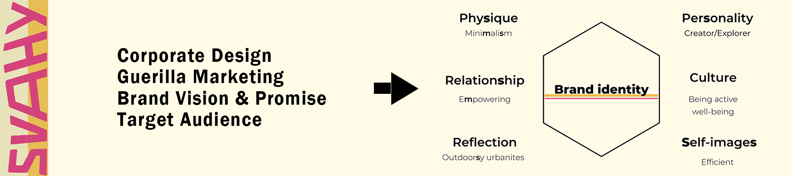

Case Company Project: Svahy
I led a team developing a comprehensive brand strategy for a Czech clothing brand Svahy. The team developed a complete brand strategy for Svahy containing corporate design, brand identity, and target audience. Svahy is an outdoor-focused lifestyle and clothing brand that aims to bridge the gap between minimalistic urban wear and durable outdoor wear. The founders are outdoor people living in a city and they want Svahy to reflect that lifestyle and offer an option for similar customers.
The branding project was a part of the International Brand Management course (5 ects). At the beginning of the course, three separate national researches were conducted in each partaking country. The course culminated in a week-long intensive branding workshop in the Czech Republic which the three schools attended along with the client. During the week the teams gave presentations regularly to update the client on the progress of the project, as well as to receive feedback regarding the direction of the report.
